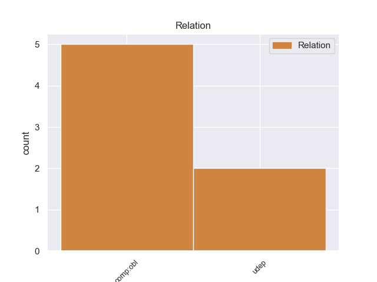
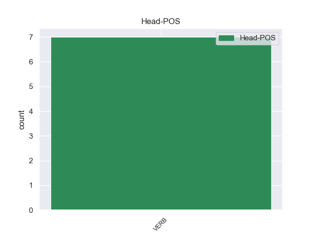
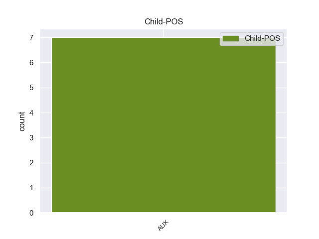

Distribution of features within this leaf



Agreement Rules sorted by frequency.
- When the dependent token is the oblique complements(comp:obl) of the head token, and the head token is VERB and the dependent token is AUX.
1 « _ _ _ _ 0 _ _ _
2 Ο _ _ _ _ 0 _ _ _
3 Κρίστιαν _ _ _ _ 0 _ _ _
4 Βουλφ _ _ _ _ 0 _ _ _
5 ήταν είμαι AUX _ Aspect=Imp|Mood=Ind|Number=Sing|Person=3|Tense=Past|VerbForm=Fin|Voice=Pass 10 comp:obl _ _
6 πολύ _ _ _ _ 0 _ _ _
7 συνεργάσιμος _ _ _ _ 0 _ _ _
8 » _ _ _ _ 0 _ _ _
9 , _ _ _ _ 0 _ _ _
10 ανάφερε αναφέρω VERB _ Aspect=Perf|Mood=Ind|Number=Sing|Person=3|Tense=Past|VerbForm=Fin|Voice=Act 0 _ _ _
11 εκπρόσωπος _ _ _ _ 0 _ _ _
12 της _ _ _ _ 0 _ _ _
13 Εισαγγελίας _ _ _ _ 0 _ _ _
14 . _ _ _ _ 0 _ _ _
1 Πρέπει πρέπω VERB _ Aspect=Imp|Mood=Ind|Number=Sing|Person=3|Tense=Pres|VerbForm=Fin|Voice=Act 0 _ _ _
2 να _ _ _ _ 0 _ _ _
3 διδαχθούμε _ _ _ _ 0 _ _ _
4 από _ _ _ _ 0 _ _ _
5 τα _ _ _ _ 0 _ _ _
6 λάθη _ _ _ _ 0 _ _ _
7 του _ _ _ _ 0 _ _ _
8 παρελθόντος _ _ _ _ 0 _ _ _
9 και _ _ _ _ 0 _ _ _
10 να _ _ _ _ 0 _ _ _
11 εξασφαλίσουμε _ _ _ _ 0 _ _ _
12 ότι _ _ _ _ 0 _ _ _
13 θα _ _ _ _ 0 _ _ _
14 θεσπίσουμε _ _ _ _ 0 _ _ _
15 τους _ _ _ _ 0 _ _ _
16 κατάλληλους _ _ _ _ 0 _ _ _
17 ελέγχους _ _ _ _ 0 _ _ _
18 και _ _ _ _ 0 _ _ _
19 μηχανισμούς _ _ _ _ 0 _ _ _
20 που _ _ _ _ 0 _ _ _
21 θα _ _ _ _ 0 _ _ _
22 εγγυώνται _ _ _ _ 0 _ _ _
23 ότι _ _ _ _ 0 _ _ _
24 αυτό _ _ _ _ 0 _ _ _
25 που _ _ _ _ 0 _ _ _
26 θα _ _ _ _ 0 _ _ _
27 κληροδοτήσουμε _ _ _ _ 0 _ _ _
28 σ _ _ _ _ 0 _ _ _
29 τις _ _ _ _ 0 _ _ _
30 μελλοντικές _ _ _ _ 0 _ _ _
31 γενιές _ _ _ _ 0 _ _ _
32 θα _ _ _ _ 0 _ _ _
33 είναι είμαι AUX _ Aspect=Imp|Mood=Ind|Number=Sing|Person=3|Tense=Pres|VerbForm=Fin|Voice=Pass 1 udep _ _
34 σε _ _ _ _ 0 _ _ _
35 καλύτερη _ _ _ _ 0 _ _ _
36 κατάσταση _ _ _ _ 0 _ _ _
37 από _ _ _ _ 0 _ _ _
38 αυτή _ _ _ _ 0 _ _ _
39 σ _ _ _ _ 0 _ _ _
40 την _ _ _ _ 0 _ _ _
41 οποία _ _ _ _ 0 _ _ _
42 το _ _ _ _ 0 _ _ _
43 παραλάβαμε _ _ _ _ 0 _ _ _
44 . _ _ _ _ 0 _ _ _
Disagree Examples:
1 Επιδοκιμάζω επιδοκιμάζω VERB _ Aspect=Imp|Mood=Ind|Number=Sing|Person=1|Tense=Pres|VerbForm=Fin|Voice=Act 0 _ _ _
2 την _ _ _ _ 0 _ _ _
3 απόφαση _ _ _ _ 0 _ _ _
4 σχετικά _ _ _ _ 0 _ _ _
5 με _ _ _ _ 0 _ _ _
6 την _ _ _ _ 0 _ _ _
7 έκθεση _ _ _ _ 0 _ _ _
8 von _ _ _ _ 0 _ _ _
9 Wogau _ _ _ _ 0 _ _ _
10 - _ _ _ _ 0 _ _ _
11 ήταν είμαι AUX _ Aspect=Imp|Mood=Ind|Number=Sing|Person=3|Tense=Past|VerbForm=Fin|Voice=Pass 1 comp:obl _ _
12 μία _ _ _ _ 0 _ _ _
13 σωστή _ _ _ _ 0 _ _ _
14 απόφαση _ _ _ _ 0 _ _ _
15 . _ _ _ _ 0 _ _ _
1 Ο _ _ _ _ 0 _ _ _
2 Έντουαρντ _ _ _ _ 0 _ _ _
3 Σνόουντεν _ _ _ _ 0 _ _ _
4 , _ _ _ _ 0 _ _ _
5 που _ _ _ _ 0 _ _ _
6 παραμένει _ _ _ _ 0 _ _ _
7 επί _ _ _ _ 0 _ _ _
8 τρεις _ _ _ _ 0 _ _ _
9 εβδομάδες _ _ _ _ 0 _ _ _
10 σ _ _ _ _ 0 _ _ _
11 την _ _ _ _ 0 _ _ _
12 αίθουσα _ _ _ _ 0 _ _ _
13 μετεπιβιβάσεων _ _ _ _ 0 _ _ _
14 του _ _ _ _ 0 _ _ _
15 αεροδρομίου _ _ _ _ 0 _ _ _
16 Σερεμέτιεβο _ _ _ _ 0 _ _ _
17 της _ _ _ _ 0 _ _ _
18 Μόσχας _ _ _ _ 0 _ _ _
19 , _ _ _ _ 0 _ _ _
20 είχε _ _ _ _ 0 _ _ _
21 ξαναζητήσει _ _ _ _ 0 _ _ _
22 άσυλο _ _ _ _ 0 _ _ _
23 απ’ _ _ _ _ 0 _ _ _
24 τη _ _ _ _ 0 _ _ _
25 Ρωσία _ _ _ _ 0 _ _ _
26 , _ _ _ _ 0 _ _ _
27 αλλά _ _ _ _ 0 _ _ _
28 απέσυρε οστέλλω VERB _ Aspect=Perf|Mood=Ind|Number=Sing|Person=3|Tense=Past|VerbForm=Fin|Voice=Act 0 _ _ _
29 τότε _ _ _ _ 0 _ _ _
30 το _ _ _ _ 0 _ _ _
31 αίτημα _ _ _ _ 0 _ _ _
32 όταν _ _ _ _ 0 _ _ _
33 ο _ _ _ _ 0 _ _ _
34 κ. _ _ _ _ 0 _ _ _
35 Πούτιν _ _ _ _ 0 _ _ _
36 είχε _ _ _ _ 0 _ _ _
37 δηλώσει _ _ _ _ 0 _ _ _
38 ότι _ _ _ _ 0 _ _ _
39 για _ _ _ _ 0 _ _ _
40 να _ _ _ _ 0 _ _ _
41 του _ _ _ _ 0 _ _ _
42 δοθεί _ _ _ _ 0 _ _ _
43 άσυλο _ _ _ _ 0 _ _ _
44 θα _ _ _ _ 0 _ _ _
45 πρέπει πρέπει AUX _ Aspect=Imp|Mood=Ind|Number=Sing|Person=3|Tense=Pres|VerbForm=Fin|Voice=Act 28 comp:obl _ _
46 να _ _ _ _ 0 _ _ _
47 σταματήσει _ _ _ _ 0 _ _ _
48 να _ _ _ _ 0 _ _ _
49 διαρρέει _ _ _ _ 0 _ _ _
50 άλλες _ _ _ _ 0 _ _ _
51 λεπτομέρειες _ _ _ _ 0 _ _ _
52 για _ _ _ _ 0 _ _ _
53 τα _ _ _ _ 0 _ _ _
54 απόρρητα _ _ _ _ 0 _ _ _
55 προγράμματα _ _ _ _ 0 _ _ _
56 των _ _ _ _ 0 _ _ _
57 ΗΠΑ _ _ _ _ 0 _ _ _
58 . _ _ _ _ 0 _ _ _
1 Ο _ _ _ _ 0 _ _ _
2 Μπαράκ _ _ _ _ 0 _ _ _
3 Ομπάμα _ _ _ _ 0 _ _ _
4 ανέφερε _ _ _ _ 0 _ _ _
5 ότι _ _ _ _ 0 _ _ _
6 « _ _ _ _ 0 _ _ _
7 ήδη _ _ _ _ 0 _ _ _
8 υπάρχουν _ _ _ _ 0 _ _ _
9 πολλές _ _ _ _ 0 _ _ _
10 αναφορές _ _ _ _ 0 _ _ _
11 για _ _ _ _ 0 _ _ _
12 πόλεμο _ _ _ _ 0 _ _ _
13 με _ _ _ _ 0 _ _ _
14 το _ _ _ _ 0 _ _ _
15 Ιράν _ _ _ _ 0 _ _ _
16 » _ _ _ _ 0 _ _ _
17 και _ _ _ _ 0 _ _ _
18 επεσήμανε επισημαίνω VERB _ Aspect=Perf|Mood=Ind|Number=Sing|Person=3|Tense=Past|VerbForm=Fin|Voice=Act 0 _ _ _
19 τέτοιες _ _ _ _ 0 _ _ _
20 συζητήσεις _ _ _ _ 0 _ _ _
21 « _ _ _ _ 0 _ _ _
22 είναι είμαι AUX _ Aspect=Imp|Mood=Ind|Number=Plur|Person=3|Tense=Pres|VerbForm=Fin|Voice=Pass 18 udep _ _
23 προς _ _ _ _ 0 _ _ _
24 όφελος _ _ _ _ 0 _ _ _
25 της _ _ _ _ 0 _ _ _
26 Τεχεράνης _ _ _ _ 0 _ _ _
27 γιατί _ _ _ _ 0 _ _ _
28 αυξάνουν _ _ _ _ 0 _ _ _
29 τις _ _ _ _ 0 _ _ _
30 τιμές _ _ _ _ 0 _ _ _
31 του _ _ _ _ 0 _ _ _
32 πετρελαίου _ _ _ _ 0 _ _ _
33 , _ _ _ _ 0 _ _ _
34 σ _ _ _ _ 0 _ _ _
35 το _ _ _ _ 0 _ _ _
36 οποίο _ _ _ _ 0 _ _ _
37 βασίζεται _ _ _ _ 0 _ _ _
38 η _ _ _ _ 0 _ _ _
39 Ιρανική _ _ _ _ 0 _ _ _
40 Κυβέρνηση _ _ _ _ 0 _ _ _
41 για _ _ _ _ 0 _ _ _
42 την _ _ _ _ 0 _ _ _
43 χρηματοδότηση _ _ _ _ 0 _ _ _
44 του _ _ _ _ 0 _ _ _
45 πυρηνικού _ _ _ _ 0 _ _ _
46 της _ _ _ _ 0 _ _ _
47 προγράμματος _ _ _ _ 0 _ _ _
48 » _ _ _ _ 0 _ _ _
49 . _ _ _ _ 0 _ _ _